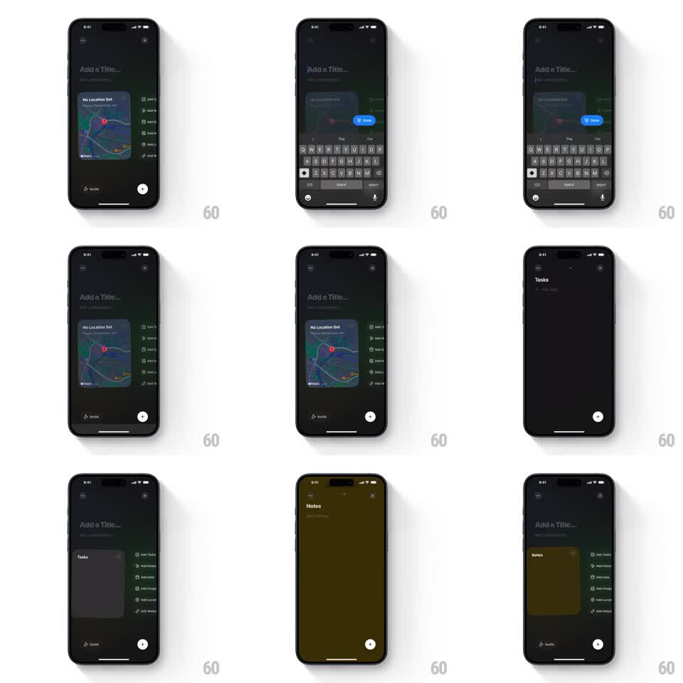

Media
Frame-by-frame

Rebuild this interaction 1:1: Canopi's collection editor - in a dark "Add a Title" composer, tapping an add-option (Tasks, Notes) morphs that card from the embedded list into a fullscreen editor and back, with the keyboard sliding in for text fields.

Rebuild this interaction 1:1: Canopi's collection editor - in a dark "Add a Title" composer, tapping an add-option (Tasks, Notes) morphs that card from the embedded list into a fullscreen editor and back, with the keyboard sliding in for text fields. ## Integration Integration: stack-agnostic spec - springs given as stiffness/damping, timed motions as duration + curve; map every value to your framework and animation library of choice. ## Scene Dark composer screen: "Add a Title..." field, a "No Location Set" map card embedded mid-screen, an options column on the right (Add Tasks, Add Notes, Add Date, Add Image, Add Location, Add Website), Shuffle bottom-left, a round create button bottom-right. Tapping Add Tasks: a dark Tasks card expands to fill the screen. Tapping Add Notes: an olive-yellow Notes editor expands to fullscreen, keyboard up with a blue Done button. ## Motion spec Pattern: card-to-fullscreen morph from an options list. - Tap an option: a card of that type materializes at the option's row position and expands to fullscreen (corner radius easing to 0, scale and translation linked, ~400ms, ease-in-out) while the composer behind dims slightly. - Text-type cards (Notes) raise the keyboard as the card passes ~70% expansion; the blue Done button docks above the keyboard. - The Notes card uses its own canvas color (olive-yellow) - the morph carries that color from the start. - Done (or close) reverses the morph: the card shrinks back into an embedded card in the composer, keyboard dropping first (~150ms lead). - The embedded card lands in the body stack with a soft settle (spring stiffness ~260, damping ~24). ## Calibration - The morph origin must be the tapped option's position - expanding from center breaks the spatial story. - Keyboard timing matters: raising it too early shows it floating over the composer. ## Reduced motion Crossfade between composer and fullscreen editor (200ms); keyboard follows the system default. ## Don't miss - The map card stays embedded in the composer throughout - only the tapped option morphs. - Notes' fullscreen color (olive) is distinct from the composer's dark theme; that contrast marks it as a different canvas.